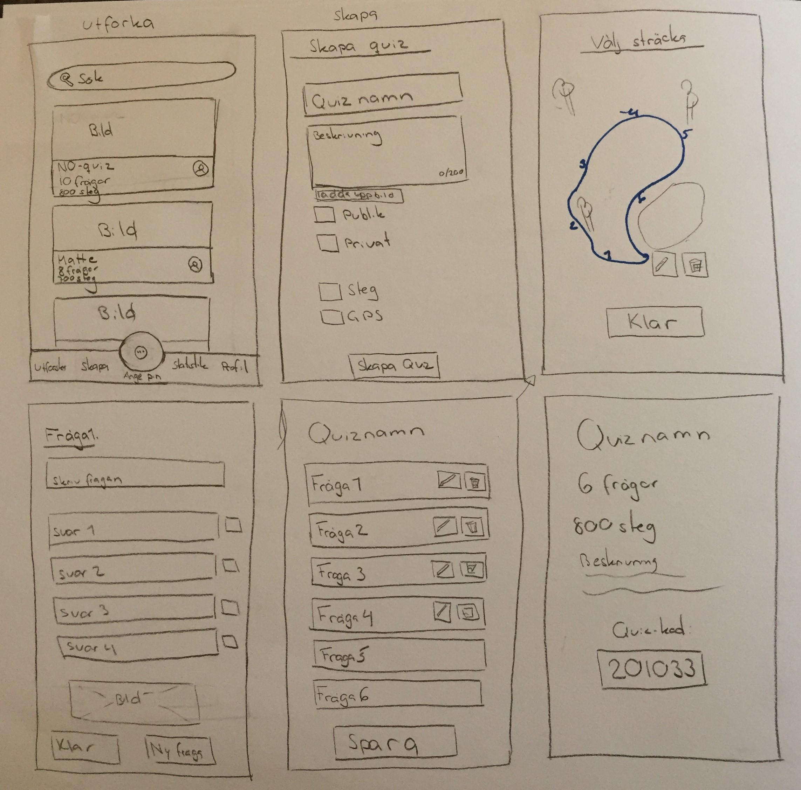

First, a prestudy was conducted which included stakeholder meetings, benchmarking,
a literature review and planning of methods. Thereafter, the design process began which included three design iterations.
The Design thinking process was used with the five steps - Empathize, Define, Ideate, Prototype, Test.
During the Empathize phase interviews with both students and teachers were performed at two schools. Additionially, observations and shadowing were performed.
In the define phase, the data gathered had to be condensed and synthesized in order to define the problem and the context. To organize the data, the interviews were transcribed.
To analyse the data affinity diagramming was used and personas, as well as user journey maps, were created based on the findings from the affinity diagrams.
During the ideate phate brainstorming, brainwriting and brainwriting was utilized to generate ideas. When beginning the prototyping phase we had a list with ideas from the ideation phase.
All of these ideas were discussed and the ones we liked the most were sum marized in a list of possible requirements.
The requirements were not definite but rather ideas that were generated during the ideate phase based on the insights from the user research.
The requirements were ideas that we were going to visualize by sketching them. The sketches made up the foundation of the low fidelity prototype.
To validate the first low fidelity prototype we prepared two different test setups; one aimed for the students and one aimed for the teachers.
This was done to test the different parts of the design. Due to the Covid-19 pandemic, we decided to do the testing digital.
We discussed different alternatives on how to best test the prototype with students digital.
We decided to do a video where we show the interface and then have the students fill in a questionnaire with questions about the design and what they thought about it.
However, we chose to do usability testing with teachers because they may have more experience with, for example, Skype.
Based on the outcome of the testing we could see that there were many aspects of the design that were appreciated but there were also some parts that were not as
appreciated which made us go back to the define step to redefine and reformulate the design challenges. New ideas were generated with the feedback from the testing in mind and new sketches
were made. However, while sketching we realised a couple of issues. We realised that most of the design had to be changed if continuing with that idea.
This would require us to go back and test the functionality as a low fidelity prototype, due to the time limit of the project this would not be possible.
Therefore we decided to go back to the define phase to rephrase the design challenge once again. The outcome of the third design itearation was the final high-fidelity prototype.
The critera that were formulated is listed below.
Interweave education in gameplay
Social gameplay increases motivation
Notify and show progress during physical activity
Competition is double-edged
Game elements increase engagement
Provide variation in physical activity to keep students engaged
Cooperation increases learning
User profiles provide customization opportunities
Provide feedback and improvement opportunities
Provide reminders to aid education
Provide structures for learnability